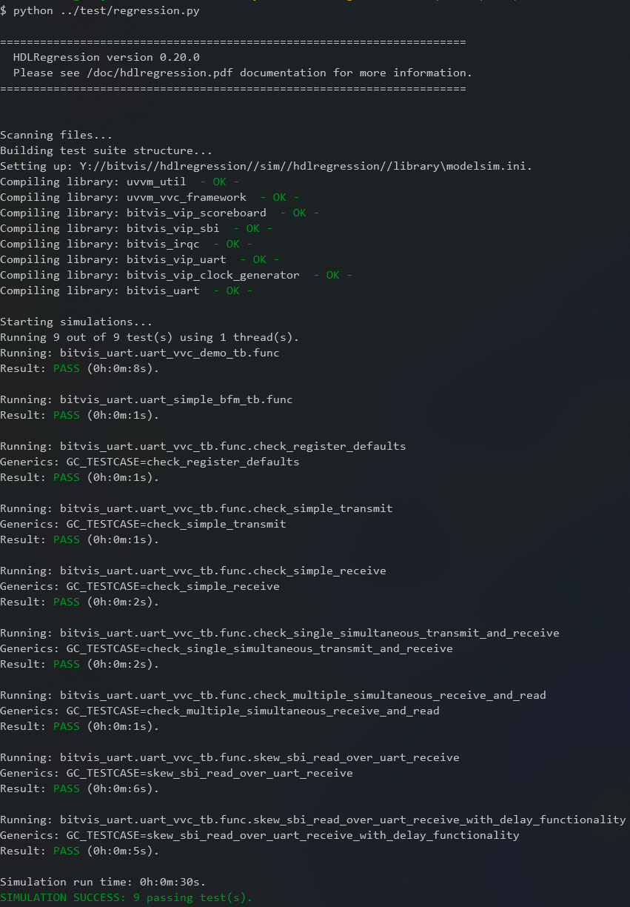
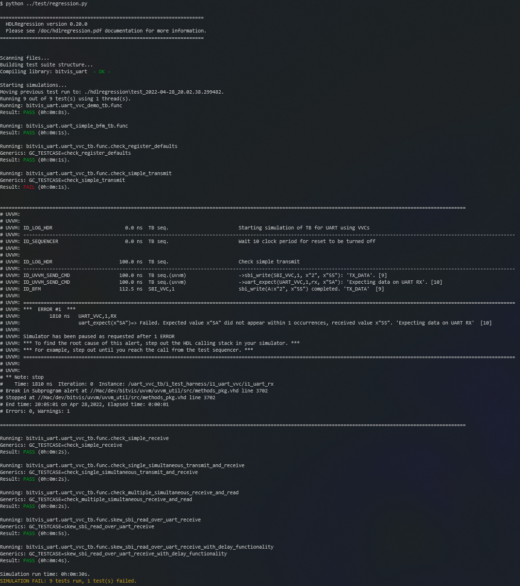

Command Line Interface (CLI)
Arguments |
Description |
|
|---|---|---|
-h |
–help |
Help screen |
-v |
–verbose |
Enable full verbosity |
-d |
–debug |
Enable debug mode |
-g |
–gui |
Run with simulator gui |
-fr |
–fullRegression |
Run all tests |
-c |
–clean |
Remove all before test run |
-tc TB_ENTITY [TB_ARCH [TC]] |
–testCase TB_ENTITY [TB_ARCH [TC]] |
Run selected testcase |
-tg TESTGROUP |
–testGroup TESTGROUP |
Run selected test group |
-ltc |
–listTestcase |
List all discovered testcases |
-ltg |
–listTestgroup |
List all test groups |
-lco |
–listCompileOrder |
List libraries and files in compile order |
-fc |
–forceCompile |
Force recompile |
-sof |
–stopOnFailure |
Stop simulations on testcase fail |
-s |
–simulator |
Set simulator (require path in env) |
-t |
–threading [N] |
Run tasks in parallel |
-ns |
–no_sim |
No simulation, compile only |
–showWarnError |
Show sim error and warning messages. |
|
–noColor |
Disable terminal output colors. |
|
–waveFormat |
Wave file format [VCD (default) or FST] |
|
Examples
Full regression
Enabling the full regression mode ensures that all testcases are run, regardless of any previous runs, i.e. re-running the complete test suite.
> python ../test/regression.py -fr
{kind=link}
Testcases
All tests that are discovered by HDLRegression can be listed using the -ltc or --listTestcase argument, and
are listed as <testbench entity>.<testbench architecture>.<sequencer built-in testcase> or just
<testbench entity>.<testbench architecture> if no sequencer built-in testcases are used.
> python ../test/regression.py -ltc
{kind=link}
Running a selected test is done using the -tc <testbench.architecture.testcase> or
--testCase <testbench.architecture.testcase> argument
Tip
Use wildcards to more effectively filter searches, i.e. testcases and filenames.
Pattern |
Meaning |
|---|---|
* |
match all |
? |
match a single charecter |
[seq] |
match any character in seq |
[!seq] |
match all character not in seq |
> python ../test/regression.py -tc uart_vvc_tb.func.check_simple_receive
A testcase can also be selected using the testcase number from the -ltc or --listTestcase argument
> python ../test/regression.py -tc 5
{kind=link}
Tip
Testcases are identified by:
<entity_name>
<entity_name>.<architecture_name>
<entity_name>.<architecture_name>.<sequencer_testcase>
Test groups
Listing of test groups that have been defined in the regression script. In the code snippet below there are defined two test groups, transmit_tests and receive_tests, that will run all testcases that have transmit and receive in the testcase name, and is defined in testbench uart_vvc_tb architecture func. There is also a test group selection_tests that will run all testcases that are part of the uart_vvc_demo_tb and uart_simple_bfm_tb entities.
Defining test groups
hr.add_to_testgroup('transmit_tests', 'uart_vvc_tb', 'func', '*transmit*') # run all transmit related tests
hr.add_to_testgroup('receive_tests', 'uart_vvc_tb', 'func', '*receive*') # run all receive related tests
hr.add_to_testgroup('selection_tests', entity='uart_vvc_demo_tb') # run this testbench
hr.add_to_testgroup('selection_tests', entity='uart_simple_bfm_tb') # run this testbench
Tip
Use wildcards to more effectively filter searches, i.e. testcases and filenames.
Pattern |
Meaning |
|---|---|
* |
match all |
? |
match a single charecter |
[seq] |
match any character in seq |
[!seq] |
match all character not in seq |
Listing test groups
> python ../test/regression.py -ltg
{kind=link}
Running test groups
Running one of the test groups, e.g. receive_tests, will run all tests with names that matches:
testbench entity with
uart_vvc_tbtestbench architecture with
funcsequencer built-in testcase with
receive
> python ../test/regression.py --testGroup receive_tests
{kind=link}
Threading
HDLRegression will run all tasks (pre-processing and testcase simulations) in a sequential order, but this can be changed
using the -t / --threading option, and optioinally with a number of threads.
Note
Running simulations in parallel using
Nthreads may requireNsimulator licenses.- Pre-processing threads are scaled to:
-> the number of libraries
-> the number of files in each library
-> the number of parsers
Sequential
All pre-processing steps and testcase running are performed sequentially.
> python ../test/regression.py -tg receive_tests
Pre-processing in parallel, simulations sequentially
All pre-processing steps are performed in parallel and testcase running is performed sequentially.
> python ../test/regression.py -tg receive_tests -t
{kind=link}
Pre-processing and simulations in parallel using 10 threads
All pre-processing steps and testcase running is performed in parallel.
> python ../test/regression.py -tg receive_tests -t 10
{kind=link}
Simulation results
Running simulations in terminal will output the necessary information, such as the testcase name, generics used, simulation run time and result.
Regression initial run
{kind=link}
Regression run without changes
No tests are run when no changes are detected in the DUT or testcase files, unless full regression is enabled using
the Command Line Interface (CLI) -fr or using the Application Programming Interface (API) in the regression script hr.start(full_regression=True).
{kind=link}
Failing testcase run
A failing testcase will be reported as FAIL with a short summary from the test log:
{kind=link}